Сходження на г.Риси (2 503 м.) Словаччина. Високі Татри
Маршрут на Риси досить популярний, хоча б через те, що будучи на вершині можна одною ногою бути в Польщі, а
іншою вже в Словаччині.
Маршрут починається біля озера й однойменного міста Štrbské Pleso, далі по Татранській магістралі йде до
наступного озера Popradské pleso, потім до роздоріжжя один поворот якого приведе вас на Копровський Штит, а
інший безпосередньо на Риси.
Підйом по серпантину вздовж річки Żabi Potok. То тут – то там треба переходити через водоспади.
Практично одразу відкриваються краєвиди на хребет Hřeben Bašt.
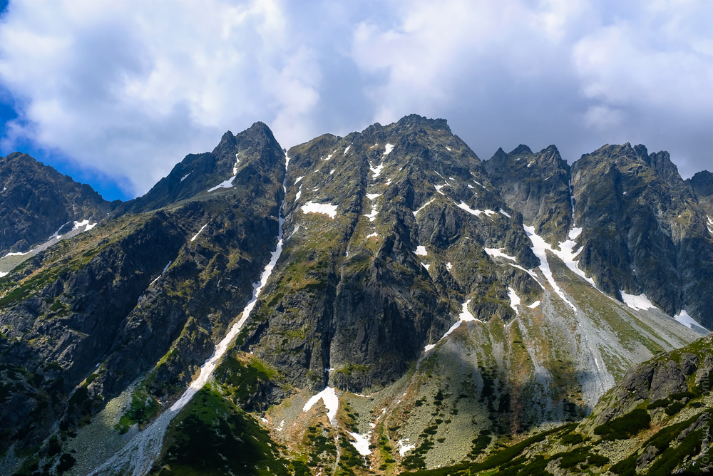
Десь там фрагмент підйому на Копровський Штит.
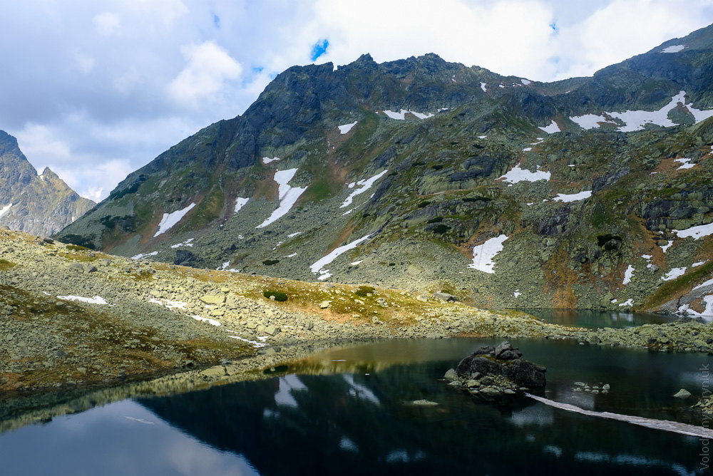
Хребет Hřeben Bašt ще називають Satanský hrebeň.
Після доволі нудного серпантину дорога виходить до озер Vel’ke i Malé Žabie pleso Mengusovské.
На мою думку, одні з найкрасивіших озер в Татрах.
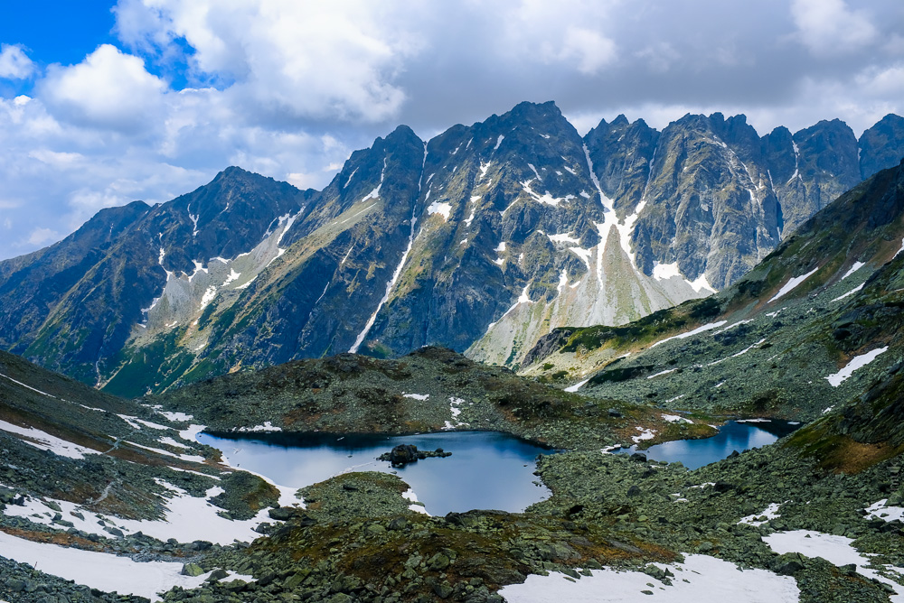
Хороша інфраструктура. Перила, скоби, ланцюги, любе і різне. Так як ціна несправності може бути дуже високою,
все підтримується в хорошому стані.
По великому рахунку додаткові точки опори потрібні хіба в кількох моментах на спуску, або в погану погоду.
Новий ракурс на озера.
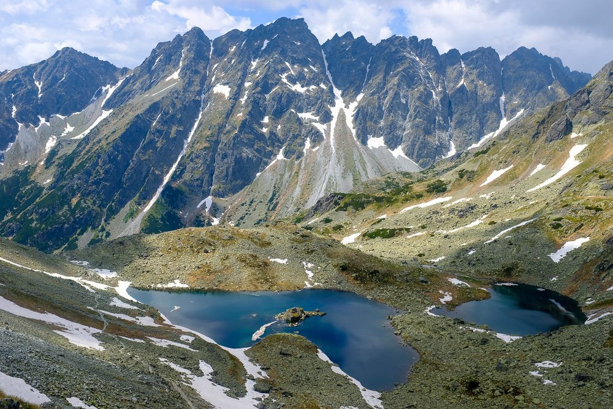
І от ми на вершині. На горизонті видно характерний силует гори Кривань (2494), та Копровський Штит.
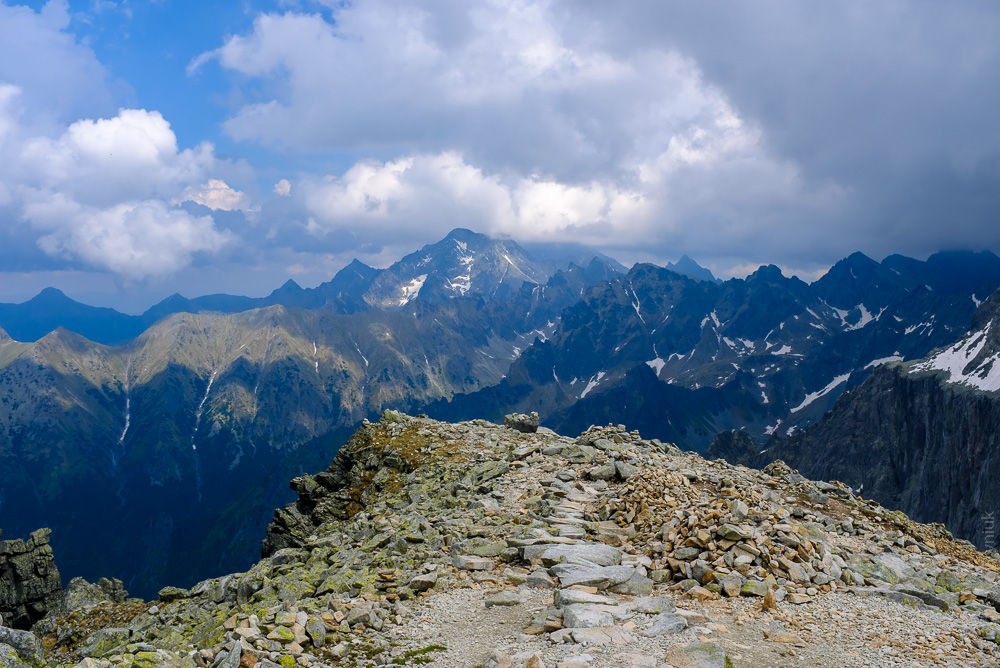
Хребет що розділяє Польщу й Словаччину.
Далі наша задача полягала в швидкому спуску, і на фото часу вже не залишилось. І вже за півтори години пили
татранський чай і запивали пивом в хаті на Попрадському плесі.
Від Івана до Івана: 5-денний маршрут Мармаросами
Якби доля надала мені можливість повернутися в минуле, я б неодмінно ще раз відвідала ці казкові місця в
Карпатах.
Напевно наші далекі предки також блукаючи по долинах річок і вершинах гір підкорювали ці мовчазні простори у
пошуках райських куточків.
Тут навколишній світ живе своїм життям, у нього свої закони, свій час і місце народження.
І тільки ми, вперті і неприборкані, намагаємося дістатися туди, де між вершинами гір народжуються хмари,
місце – де ти знайдеш справжнього себе!
Кожен день нашого перебування в горах був по-особливому насичений позитивними емоціями, яскравими пейзажами,
цікавими зустрічами та іншими цікавинками.
Все це можна описувати довго і невтомно.
 За якихось пару сотень гривень, місцевий водій вантажівки люб’язно погодився підвезти нас аж до полонини Лисича.
Кому ж автомобільний екстрім не прийшовся по душі, той вирушив на Попа пішки.
Тож, поки більшість «з вітерцем» в кузові чотириколісного монстра мчить по бездоріжжю, трійка найвитриваліших
чалапає вздовж Білого потоку, поступово набираючи висоту без жодних заздрощів першопрохідцям.
Сонечко, квіти, різнотрав’я, афини і брусниця – цього всього було вдосталь на протязі затяжного,
чотирнадцятикілометрового підйому до запланованого місця ночівлі.
Таборування влаштували на висоті 1750 м над р.м. вище притулку КБЗ, де з просторих схилів відкривається неосяжна
панорама карпатських гір. Тут є багато джерел, адже вода на високогір’ї на вагу золота! Посиденьки біля ватри,
повний місяць і неймовірна тиша та спокій під куполом зоряного неба – 100% щастя! Ніч нашіптує колискову,
поступово занурюючи в солодкий сон втомлених мандрівників. Засинаємо в сподіванні на ранкове диво…
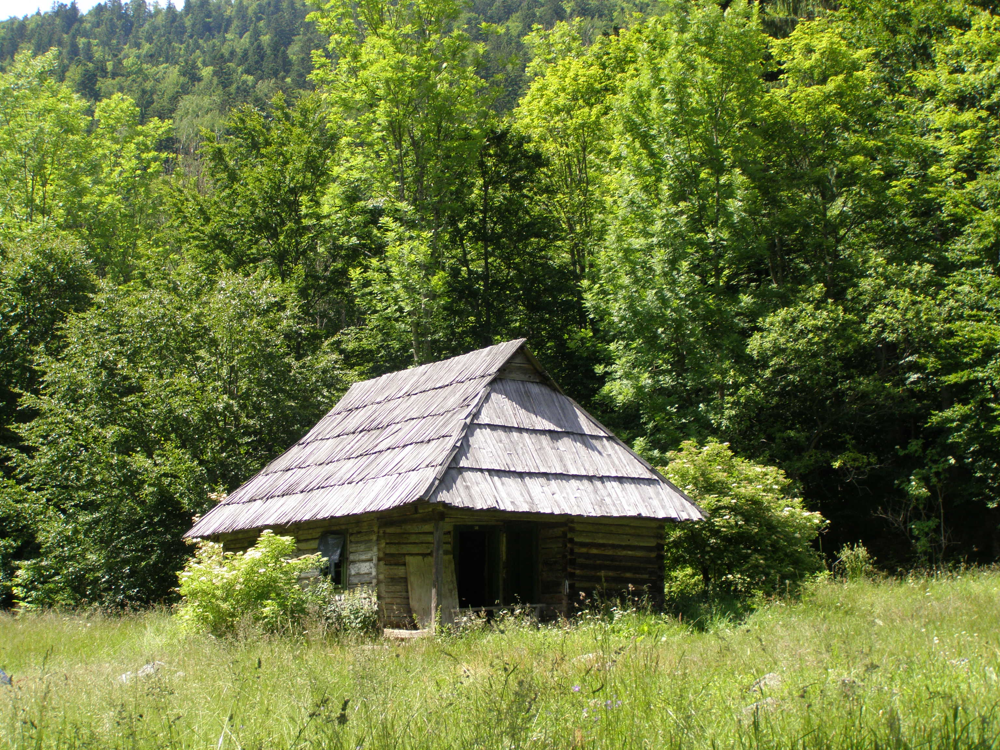
Майже втрачена для широкого загалу назва «Мармарош» знову виникає і викликає до себе велике зацікавлення
насамперед неповторними горами та мало порушеною природою цього карпатського краю. Розташований на пограниччі,
віддалений від великих центрів промисловості, головних транспортних шляхів, Мармароський масив зберігає свою
окремішність і загадковість.
За якихось пару сотень гривень, місцевий водій вантажівки люб’язно погодився підвезти нас аж до полонини Лисича.
Кому ж автомобільний екстрім не прийшовся по душі, той вирушив на Попа пішки.
Тож, поки більшість «з вітерцем» в кузові чотириколісного монстра мчить по бездоріжжю, трійка найвитриваліших
чалапає вздовж Білого потоку, поступово набираючи висоту без жодних заздрощів першопрохідцям.
Сонечко, квіти, різнотрав’я, афини і брусниця – цього всього було вдосталь на протязі затяжного,
чотирнадцятикілометрового підйому до запланованого місця ночівлі.
Таборування влаштували на висоті 1750 м над р.м. вище притулку КБЗ, де з просторих схилів відкривається неосяжна
панорама карпатських гір. Тут є багато джерел, адже вода на високогір’ї на вагу золота! Посиденьки біля ватри,
повний місяць і неймовірна тиша та спокій під куполом зоряного неба – 100% щастя! Ніч нашіптує колискову,
поступово занурюючи в солодкий сон втомлених мандрівників. Засинаємо в сподіванні на ранкове диво…
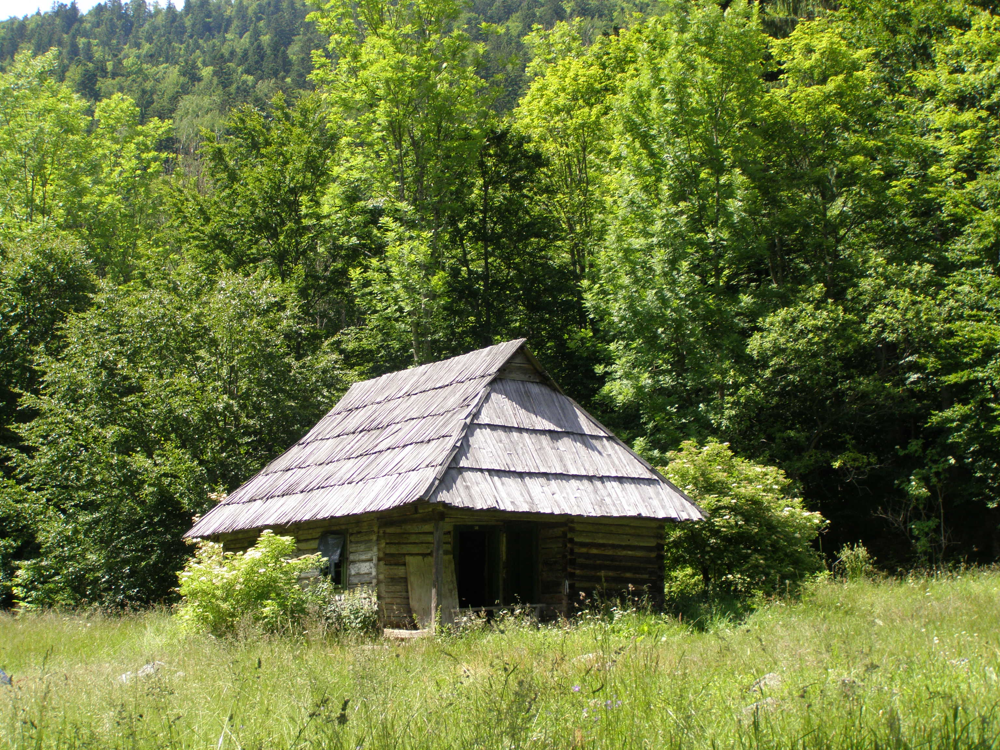
Майже втрачена для широкого загалу назва «Мармарош» знову виникає і викликає до себе велике зацікавлення
насамперед неповторними горами та мало порушеною природою цього карпатського краю. Розташований на пограниччі,
віддалений від великих центрів промисловості, головних транспортних шляхів, Мармароський масив зберігає свою
окремішність і загадковість.
 Ранок наступного дня справді видався дивовижним і неймовірно феєричним! Вранішнє яскраве сонце, пробиваючись
крізь шовкові хмари, створювало справжнє світлове шоу від якого захоплювало подих. Тумани стелилися по долинах
аж до Ділового, як в пісні: «туман яром, туман долиною…».
Згодом «КСП»-смуга приводить нас до наступного місця ночівлі – полонину Лечен (1290 м), що в урочищі Маслокрут.
Високогірне пасовисько з виглядом на Петрос Мармароський вражало своєю розкішністю та навколишніми краєвидами.
Тут просторо, легко дихається хвоєю і смачно пахне грибами. Доречі, віднині фотоекспедиція сідає на грибну
дієту: нашестя білих грибів у цих краях – явище звичне. Після декількох хвилин блукання в смерековому лісі, ми,
як правило, поверталися в табір з оберемками природного білку і запашних калорій.
Тож на вечерю: юшка з білих
грибів, чай із карпатського зілля і тиха зоряна ніч приправлена безліччю зірок.
Ранок наступного дня справді видався дивовижним і неймовірно феєричним! Вранішнє яскраве сонце, пробиваючись
крізь шовкові хмари, створювало справжнє світлове шоу від якого захоплювало подих. Тумани стелилися по долинах
аж до Ділового, як в пісні: «туман яром, туман долиною…».
Згодом «КСП»-смуга приводить нас до наступного місця ночівлі – полонину Лечен (1290 м), що в урочищі Маслокрут.
Високогірне пасовисько з виглядом на Петрос Мармароський вражало своєю розкішністю та навколишніми краєвидами.
Тут просторо, легко дихається хвоєю і смачно пахне грибами. Доречі, віднині фотоекспедиція сідає на грибну
дієту: нашестя білих грибів у цих краях – явище звичне. Після декількох хвилин блукання в смерековому лісі, ми,
як правило, поверталися в табір з оберемками природного білку і запашних калорій.
Тож на вечерю: юшка з білих
грибів, чай із карпатського зілля і тиха зоряна ніч приправлена безліччю зірок.
 Ранок в урочищі Маслокрут почався з пташиного щебетання.
Сонце поволі піднімалося десь із-за Чорногори, поступово заливаючи своїм лагідним світлом напівсонну полонину.
Ранок в урочищі Маслокрут почався з пташиного щебетання.
Сонце поволі піднімалося десь із-за Чорногори, поступово заливаючи своїм лагідним світлом напівсонну полонину.
 Ліниво покидаємо свої намети щоб розпочати вранішню фотосесію. Доброго ранку, Карпати!
За ясної погоди з полонини Лечен добре видно Свидовецький масив, частину Горган, Чорногору.
Цей затишний куточок Мармарошчини довго не хотілося покидати, але попереду ще довга дорога вздовж
Україно-Румунського кордону.
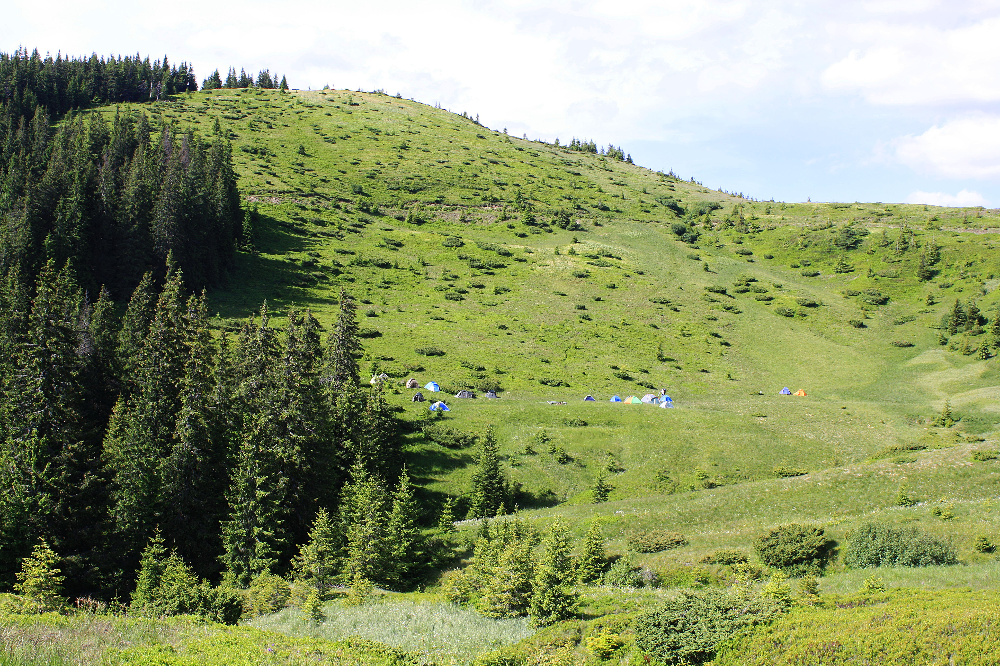
З полонини піднімаємося вгору і знову виходимо на широку прикордонну дорогу, вздовж якої встановлені
попереджувальні таблички: «Увага! Державний кордон України. Прохід (проїзд) заборонено».
Однак, навіть попри
такі серйозні застереження вартових державного рубежу, наша експедиція може без особливих побоювань рухатися
вздовж кордону. Адже напередодні мандрівки група отримала спеціальний дозвіл від начальника ВПС «Ділове» на
перебування в прикордонній зоні.
Далі наша дорога пролягає до вершини гори з мелодійною назвою Ненєска.
Біля її підніжжя знаходиться полонина з однойменною назвою.
На багатьох картах Нєнєска (1815 м) названа як “Міка-Маре”.
Насправді гора має вигляд хребта із невиразними вершинками, які називаються відповідно Нєнєска Мала і Нєнєска
Велика. Утверджена назва походить від обрізаної румунської назви Нєнєска Міка та Нєнєска Маре (Micа mare).
На відрізку від Великої Ненєски до Малої знаходиться царство каменю.
Це урочище Скелі Смерті. Численні кам’яні розсипи та осипища набувають тут рухомого характеру.
Час від часу цілі потоки з каменю осипаються на дорогу.
Довкола скель лежать розкидані велетенські кам’яні брили вагою в декілька тонн кожна.
Ліниво покидаємо свої намети щоб розпочати вранішню фотосесію. Доброго ранку, Карпати!
За ясної погоди з полонини Лечен добре видно Свидовецький масив, частину Горган, Чорногору.
Цей затишний куточок Мармарошчини довго не хотілося покидати, але попереду ще довга дорога вздовж
Україно-Румунського кордону.
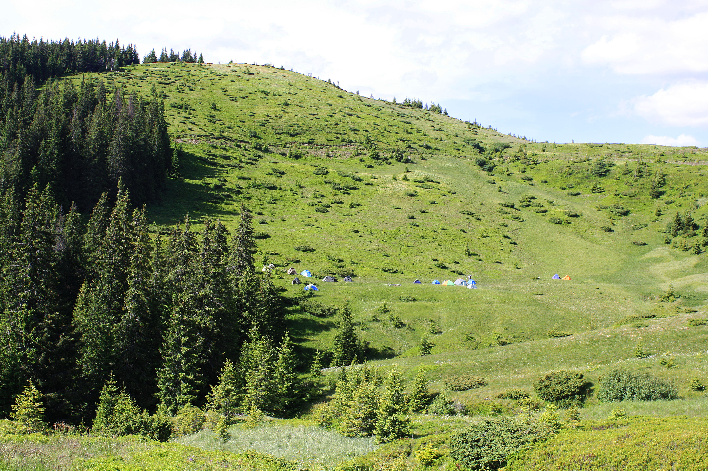
З полонини піднімаємося вгору і знову виходимо на широку прикордонну дорогу, вздовж якої встановлені
попереджувальні таблички: «Увага! Державний кордон України. Прохід (проїзд) заборонено».
Однак, навіть попри
такі серйозні застереження вартових державного рубежу, наша експедиція може без особливих побоювань рухатися
вздовж кордону. Адже напередодні мандрівки група отримала спеціальний дозвіл від начальника ВПС «Ділове» на
перебування в прикордонній зоні.
Далі наша дорога пролягає до вершини гори з мелодійною назвою Ненєска.
Біля її підніжжя знаходиться полонина з однойменною назвою.
На багатьох картах Нєнєска (1815 м) названа як “Міка-Маре”.
Насправді гора має вигляд хребта із невиразними вершинками, які називаються відповідно Нєнєска Мала і Нєнєска
Велика. Утверджена назва походить від обрізаної румунської назви Нєнєска Міка та Нєнєска Маре (Micа mare).
На відрізку від Великої Ненєски до Малої знаходиться царство каменю.
Це урочище Скелі Смерті. Численні кам’яні розсипи та осипища набувають тут рухомого характеру.
Час від часу цілі потоки з каменю осипаються на дорогу.
Довкола скель лежать розкидані велетенські кам’яні брили вагою в декілька тонн кожна.
 Насправді місце цікаве, але в той же час дуже небезпечне.
За останні півстоліття тут загинули десятки людей.
Незважаючи на це, популярність скель не зменшується.
В зимовий період сюди взагалі краще не ходити – сильні морози і безперервні вітри, небезпека від голодних
вовків, загроза лавин, мобільний зв’язок є лише на прикордонній смузі.
В разі чого, рятувальникам важко прийти на допомогу.
Відомий не один випадок коли прикордонники просто забороняли зимовий похід недостатньо екіпірованих туристів.
Насправді місце цікаве, але в той же час дуже небезпечне.
За останні півстоліття тут загинули десятки людей.
Незважаючи на це, популярність скель не зменшується.
В зимовий період сюди взагалі краще не ходити – сильні морози і безперервні вітри, небезпека від голодних
вовків, загроза лавин, мобільний зв’язок є лише на прикордонній смузі.
В разі чого, рятувальникам важко прийти на допомогу.
Відомий не один випадок коли прикордонники просто забороняли зимовий похід недостатньо екіпірованих туристів.
 Ми залишали ці величні гори, які на протязі семи днів дивували нас своєю красою та заряджали позитивними
враженнями. Ті, хто бодай раз побував тут, милувався красою хвиль застиглого, навіки розбурханого гірського
океану, здатні роками черпати натхнення із бездонної криниці пережитих вражень.
І це відчуття непідвладне часові і стихіям житейського моря. Бо немає в світі нічого більш досконалого ніж гори!
Вони були до появлення людини і будуть після неї, спонукаючи її знову й знову підніматися до височенних гірських
вершин, ризикуючи життям заради
декількох коротких, але незабутніх i таких жаданих миттєвостей.
Ми залишали ці величні гори, які на протязі семи днів дивували нас своєю красою та заряджали позитивними
враженнями. Ті, хто бодай раз побував тут, милувався красою хвиль застиглого, навіки розбурханого гірського
океану, здатні роками черпати натхнення із бездонної криниці пережитих вражень.
І це відчуття непідвладне часові і стихіям житейського моря. Бо немає в світі нічого більш досконалого ніж гори!
Вони були до появлення людини і будуть після неї, спонукаючи її знову й знову підніматися до височенних гірських
вершин, ризикуючи життям заради
декількох коротких, але незабутніх i таких жаданих миттєвостей.

Лікійська стежка. Маршрут Туреччиною
Лікійська стежка – це пішохідний маршрут в Туреччині по місцям древньої Лікії, що входить в список
наймальовничіших у світі.
Й не дарма. Різноманітність та краса краєвидів тут захоплює.
Повний маршрут від Анталії до Фетхіє складає 540 км.
Найпопулярніший відрізок – Анталія–Олімпус.
Мені давно кортіло пройтися цією стежкою, тож минулого року, зібравшись невеликою компанією, ми вирушили в
Туреччину.
Особливість Лікійської стежки – її можна проходити дуже по-різному.
Можна обирати не тільки певні відрізки стежки, а й формат.
Можна йти з рюкзаком та ночувати в наметі в лісі, можна ночувати в наметі в спеціальних кемпінгах – в такому
випадку в вашому розпорядженні буде душ, туалет, спільна кухня, доступ до кафе чи бару; можна зупинятися
виключно в гест-хаусах і спати на м’якому ліжку, можна за невеликі гроші ставити намет на подвір’ї місцевих –
вони завжди радо здадуть кімнату або місце у дворі. А можна міксувати усі ці варіанти, як вам заманеться.
Власне, саме це ми та зробили: ми через день зупинялися в гест-хаусах, щоб добре перепочити, а наметом ставали в
кемпінгах, лише раз ночували “по-дикому” у безлюдній бухті з кабанами. Але про це згодом.
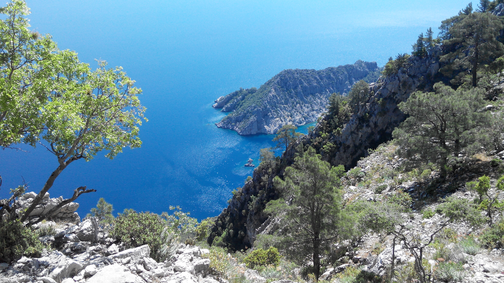
Ідеальним періодом для трекінгу по Лікійці вважається весна з середини березня по кінець травня: вже достатньо
тепло, менше опадів та більше сезонних фруктів. Влітку надто спекотно, а зимою враження від трекінгу можуть
зіпсувати дощі та сніг в горах, хоче температура вдень взимку може доходити до +20 градусів.
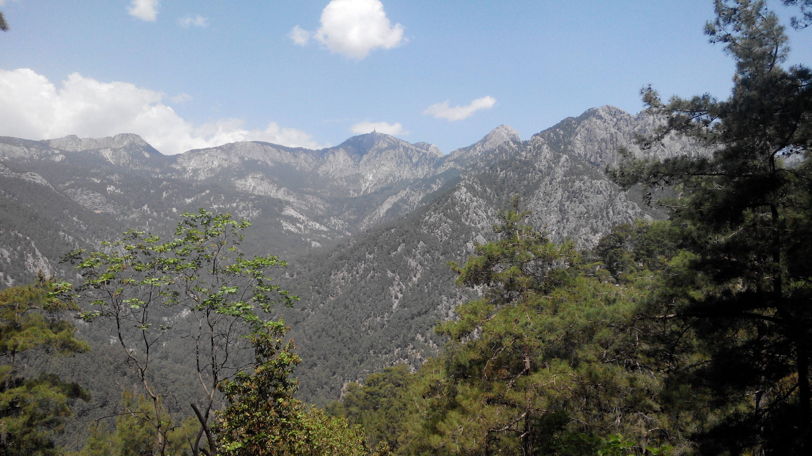
Спеціальна фізична підготовка трекінг по Лікійській стежці не потрібна. Якщо ви бували в Карпатах, полюбляєте
піші прогулянки та маєте певну витривалість – цього достатньо.
В залежності від формату трекінгу потрібно зібрати спорядження.
Стандартний набір для походу: намет, спальний мішок, каремат (рекомендую надувні), палиці (опціонально, але дуже
стають в пригоді), похідна кухня, комплект одягу, зручні черевики та змінне взуття, тощо.
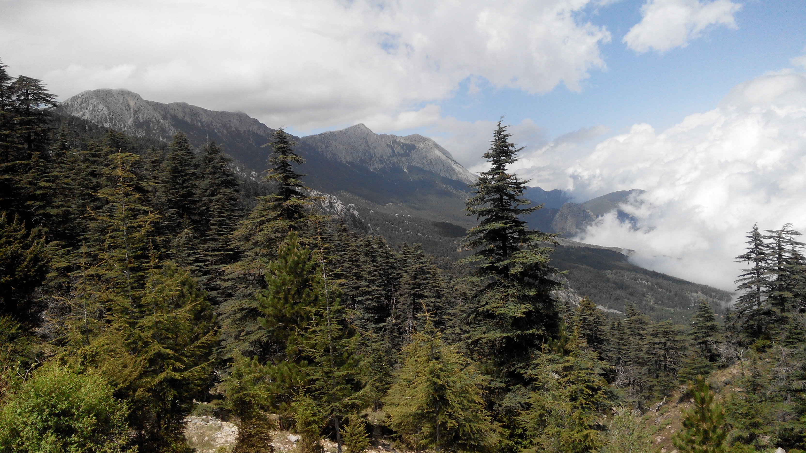
На виборі взуття хочеться зупинитися: неправильно підібране взуття може вщент зіпсувати похід.
Дуже погана ідея брати на стежку кросівки – на стежці трапляється дуже багато каміння, тому взуття з м’якою
підошвою категорично не підходить.
Найкращий варіант – трекінгові черевики, що захищають голінь. Також добре мати другу пару взуття для відпочинку,
наприклад сандалі.
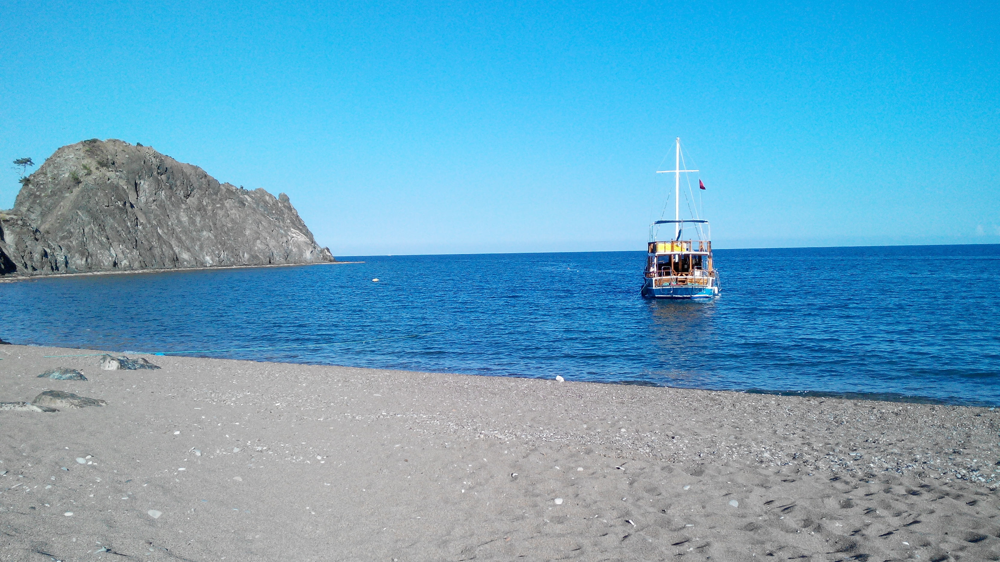
Для самостійного приготування їжі обов’язково потрібний газовий пальник.
Розводити багаття в багатьох місцях заборонено, особливо на пляжах та в бухтах.
Оскільки газові балони заборонено перевозити в літаку, придбати паливо можна в Анталії, в магазині Decatlon або
Tibet Outdoor.
Також балони продають в маленьких містечках, що трапляються на шляху, але краще придбати балон заздалегідь.
Обов’язковий аксесуар – сонцезахисний крем.
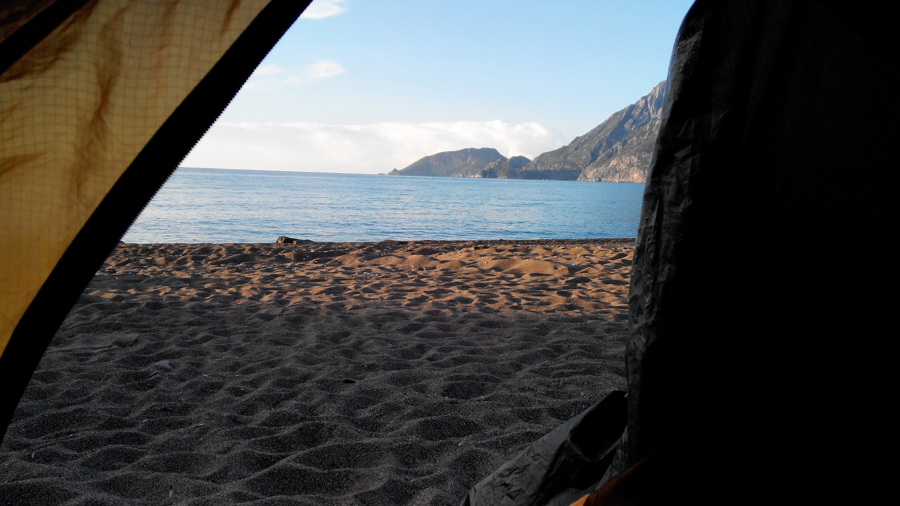
Тут також є опції: можна готувати самотужки, можна харчуватися в гест-хаусах та кемпінгах чи місцевих кафе.
Звісно, в горах чи далеко в лісі не варто розраховувати на кафе, хоча, інколи трапляються і такі варіанти.
Зазвичай сніданок в гест-хаусах чи кемпінгах складається з яєць та різних додатків: сосисок, овочів, масла,
сиру, хліба.
В місцевих маленьких магазинах, які можна зустріти в селах, набір продуктів не зовсім звичний для нас: навіть не
варто намагатися знайти там гречку, вівсянку, навіть рис та макарони трапляються рідко.
З консервами теж все погано – зазвичай полички забиті тунцем та консервованою долмою.
Замість звичної ковбаси тут можна купити суджук – щось на кшталт напівготової ковбаси, яку треба смажити.
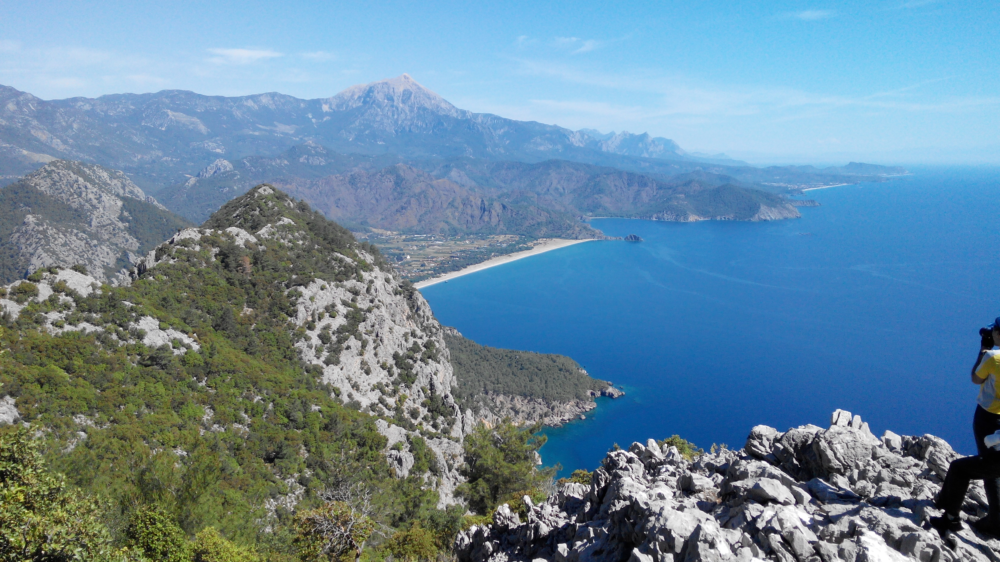
Тож з похідним меню потрібно фантазувати або запасатися харчами у великих супермаркетах та містах.
Для швидких обідів на стежці ідеально підходить сублімована їжа.
Зараз є багато українських виробників, що пропонують широкий асортимент їжі в пакетиках від 25 грн за порцію.
Щодо славнозвісної турецької кави – не розраховуйте на кав’ярні третьої хвилі, навіть в Анталії.
Особисто мене кава в кафе на стежці не вразила. Для пристрасних поціновувачів кави рекомендую варити її
самотужки – вже краще, ніж те, що вам подадуть в туристичному ресторанчику.
Вода. На стежці багато питних фонтанчиків та джерел води, де можна поповнювати запаси.
За допомогою Maps.me можна знайти найближче джерело та почитати відгуки: трапляється, що потічок чи фонтан
пересох і воду звіти брати не рекомендують.
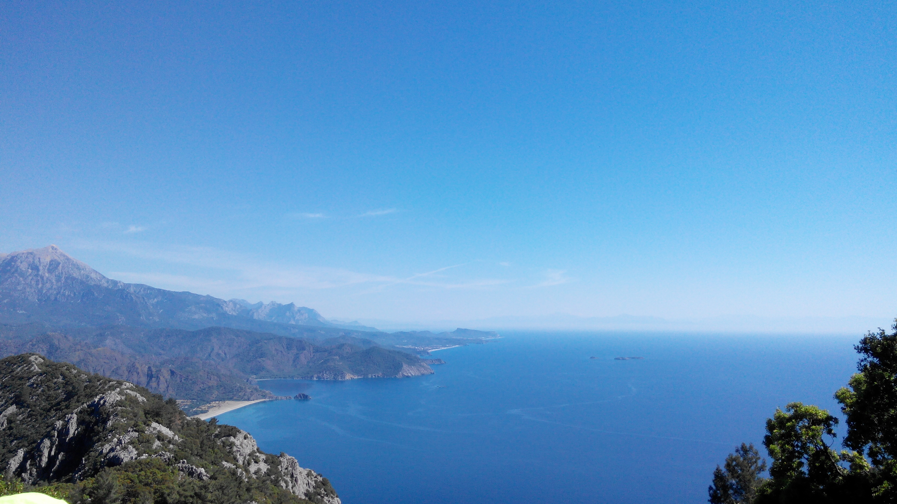
Лікійська стежка дуже добре промаркована червоно-білими позначками, що зустрічаються на деревах, камінні,
табличках, тощо. Проте сподіватися лише на маркування не варто. Для кращої орієнтації на маршруті ліпше
використовувати карти місцевості. Ми орієнтувалися за допомогою Maps.me – тут зручно можна побудувати маршрут,
також на картах Maps.me досить детально позначені стежки, джерела води, цікаві місця, тощо. В інтернеті можна
знайти різні варанти карти по стежці для навігаторів та застосунків.
Складаючи маршрут, ми вирішили відмовитися від ділянки стежки, що заходить в гори, та пройтися поближче до
узбережжя. Ми стартували в містечку Каш та закінчили в Тікірові, тобто йшли не від Анталії, а до до неї.
Оскільки нашою метою був дуже розслаблений варіант трекінгу, з мінімальними переходами приблизно 15 км за день,
ми дозволили собі кілька разів скоротити менш цікаві ділянки маршруту, під’їжджаючи на автобусі, таксі та навіть
човні. Але все ж основну частину нашого маршруту ми пройшли пішки.
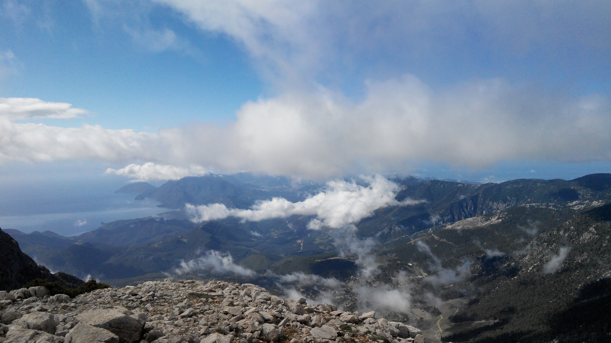
Після Чіралі до Тікірови є лише один шматок стежки без поселень та цивілізації.
Стежка проходить дуже близько до моря – йти одне задоволення.
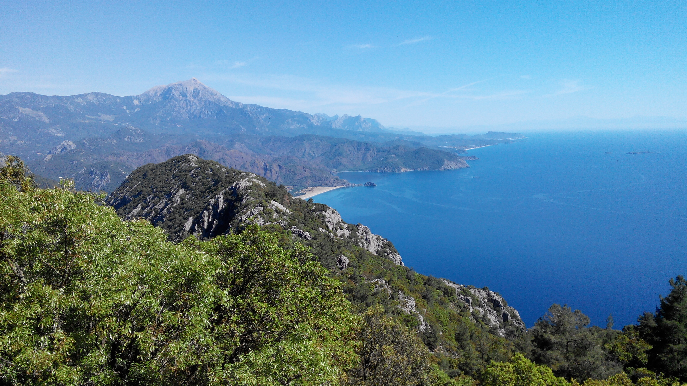
На цьому маршруті є кілька прекрасних безлюдних бухт для купання або ночівлі.
Деякі з них навіть мають імпровізований душ, кілька столиків для обіду та джерела прісної води.
В одній з такх бухт ми зупинилися на ніч. Це була наша єдина повністю “дика” ночівля, максимально близько до
узбережжя.
Окрім приємного звуку морського прибою, півночі ми слухали тупотіння та вереск диких кабанів, що зграєю
атакували сміттєвий бак на пляжі в пошуках їж.
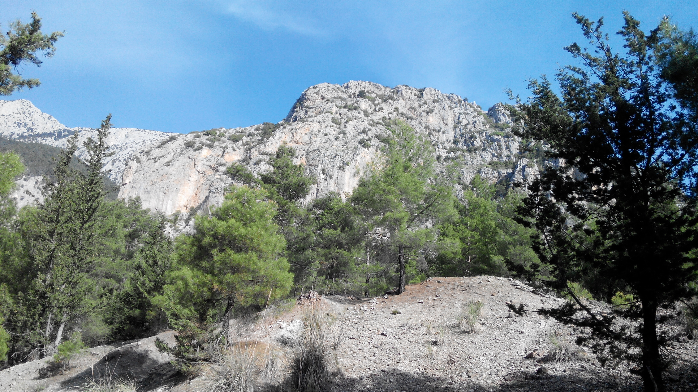
Кабанів тут багато, майже скрізь можна зустріти траншеї, які вони риють, шукаючи поживу.
Щоб вони не докучали – їжу краще максимально добре пакувати, щоб запах не привертав увагу тварин, та підвішувати
повище на дерево.
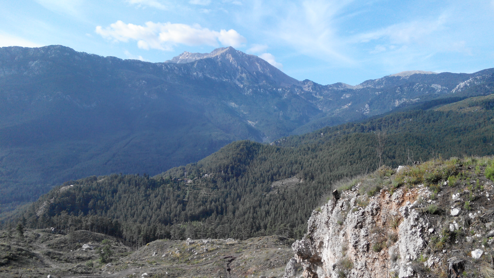
Тікірова – це вже повноцінне курортне місто, де навіть на початку травня можна зустрічати багато відпочиваючих в
турецьких олл-інклюзівах. Вулиці міста – це безкінечні торгові ряди з пляжними аксесуарами, сувенірами та
виробами з хутра. Місцеві непогано знають російську, тому щоразу намагаються закликати туристів. Особливо
весело, коли ти йдеш спітнілий, брудний, з рюкзаком, а турок кричить тобі “Заходь, вибирай шубу! Скоро холодно
буде!”. Десь на околиці міста є кемпінг, можливо єдиний тут. Але ми зупинилися в готелі, щоб добряче виспатися
перед довгим поверненням додому, в Україну. Зупинятися надовго в Тікірові немає жодного сенсу.
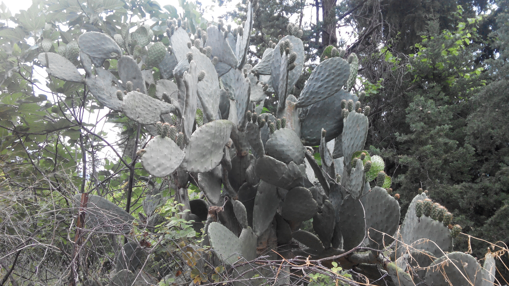
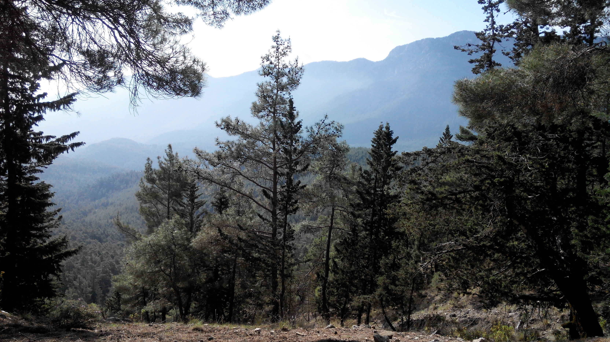